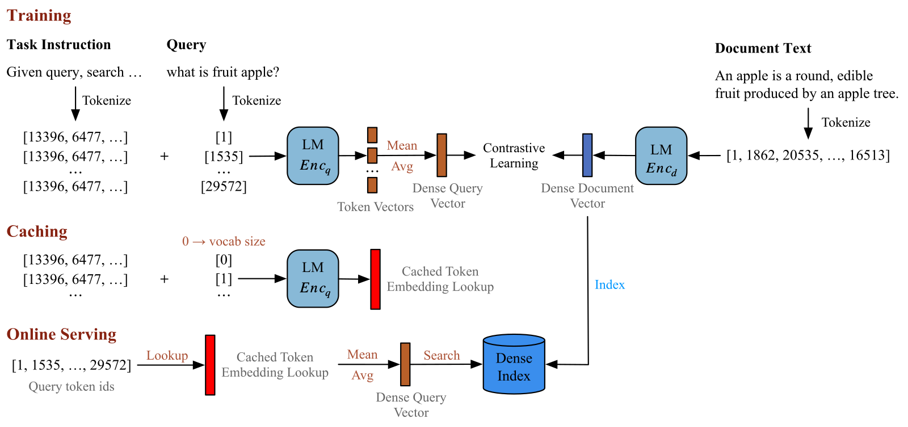
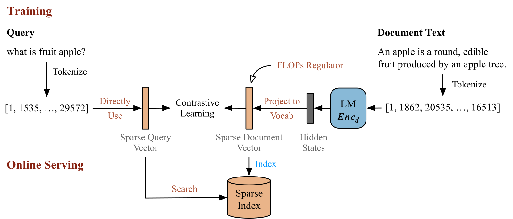

SHARE
Teams that serve a high volume of search queries and want large-language-model (LLM) embeddings should read this paper. The idea in one line: keep the full LLM on the document side, and reduce the online query side to one table lookup plus an average. On one A800 GPU, query encoding time drops from 109.5 seconds to 0.04 seconds, while ranking quality on BEIR (15 English retrieval datasets) drops from 56.8 to 54.4 nDCG@10.
What problem does it solve?
A vector retriever has two encoders. Documents are encoded offline and indexed ahead of time. Queries arrive live and must be encoded online. The strongest recent retrievers use 7B or 8B LLMs on both sides, so every query needs a full LLM forward pass on a GPU. That pass is the serving bottleneck.
The authors ask whether queries really need the same depth of modeling as documents. Classic BM25 (keyword overlap and term-frequency scoring) costs almost nothing and is still competitive on many tasks. This suggests the query side can be simplified a lot, as long as the document side stays strong.
| Stage | Standard LLM retriever | LightRetriever |
|---|---|---|
| Document encoding | Full LLM, offline | Full LLM, offline (unchanged) |
| Query encoding (dense) | Full LLM, online | Table lookup plus average |
| Query encoding (sparse) | Full LLM, online | Token counts, no model |
| Final score | One signal | Weighted sum of dense and sparse |
Dense retrieval: precompute every token's vector

Training. Instead of feeding the whole query into the LLM, each query token is appended alone to the task instruction, and the last position's output becomes that token's vector. The query vector is the average of these token vectors. Because tokens no longer interact inside the model, each token vector depends only on the instruction plus that token, so it can be computed in advance. Training uses standard contrastive learning with 7 hard negatives per query.
Caching. After training, every vocabulary token is encoded the same way and stored as a lookup table. Llama-3.1-8B has 128,256 tokens and 4,096 dimensions, so the table takes about 1.05 GB in half precision. Building it takes under 20 seconds on 8 H800 GPUs.
Serving. A query is tokenized, each token's row is looked up, and the rows are averaged. Worked example (illustrative): if "apple" maps to (0.8, 0.2) and "fruit" maps to (0.6, 0.4), the query vector is (0.7, 0.3).
Why train with the full LLM at all? In an ablation on Llama-1B, training the query side with only an embedding table drops BEIR from 48.7 to 37.5. I read this as evidence that the LLM writes retrieval knowledge into each token vector during training, and the table simply stores it.
Sparse retrieval: no model on the query side

The sparse query vector is just how many times each token appears. On the document side, the LLM output at each position is projected onto the vocabulary, each weight becomes log(1 + max(value, 0)), and the maximum over positions gives the document's weight for each token. Because the model computes these weights, a document can also give weight to related tokens that never appear in its text.
The score is the dot product of the two vectors. Worked example (illustrative): the query "apple fruit apple" has apple 2 and fruit 1. A document with apple 2.1, fruit 1.3 and orchard 0.8 scores 2×2.1 + 1×1.3 = 5.5. Orchard adds nothing because the query does not contain it.
To keep the index small, training adds a FLOPs regularizer: average each token's weight over the batch, square it, and sum over tokens. Many small non-zero weights add up under this penalty, so it pushes most weights to zero. Its coefficient is 0.001, ramped up over the first 4,000 steps.
Fusion: scale both scores to 0–1, then weight
The paper only says normalized scores are summed. The official code shows the details. For each query, both score lists are min-max scaled with (score − min) ÷ (max − min) and then combined with default weights of 0.7 for dense and 0.3 for sparse. Worked example (illustrative): a dense score of 0.5 after scaling and a sparse score of 1 give 0.7×0.5 + 0.3×1 = 0.65.
Scaling matters because cosine scores lie in [−1, 1] while sparse scores can reach dozens. For Llama-1B, dense alone gives 48.7 on BEIR and hybrid gives 52.0, only 1.1 below the full model. The sparse signal restores exact keyword matching for things like model numbers and names.
Results: how much faster, how much worse?
nDCG@10 scores the ranking of the top 10 results on a 0–100 scale. BEIR averages 15 English datasets and CMTEB (Chinese Massive Text Embedding Benchmark) averages 8 Chinese retrieval datasets. The speed test retrieves 65,536 Bing queries over 1M MS MARCO passages on one A800.
| Setup | Query encoding | Total | QPS | BEIR | CMTEB |
|---|---|---|---|---|---|
| Full Llama-8B both sides | 109.5 s | 119.4 s | 549 | 56.8 | 67.6 |
| Full Llama-1B both sides | 19.9 s | 29.6 s | 2210 | 53.1 | 63.8 |
| Query side uses only Llama-8B layer 1 | 2.34 s | 11.8 s | 5533 | 50.1 | 54.4 |
| LightRetriever (Llama-8B) | 0.04 s | 9.4 s | 6999 | 54.4 | 63.0 |
Once encoding is nearly free, search takes most of the remaining 9.4 seconds. So the end-to-end speedup is about 13×, not the 2,500× of the encoding step. Keeping only the first layer is worse on both speed and quality.
LightRetriever-Llama-8B scores 54.4 on BEIR, above BGE-m3 dense plus sparse at 49.6 and close to E5-Mistral at 56.9. Across six backbones, the loss versus full models is 1.1 to 2.8 points on BEIR and 2.1 to 4.6 on Chinese, so Chinese suffers more. By task, it beats the full model on TREC-COVID (115% retention) and argument retrieval (107%), but keeps only about 87% on entity retrieval and citation prediction. Code and reasoning-heavy retrieval also drop clearly.
Limitations I see
- Query tokens never interact at serving time. Reasoning and code retrieval suffer, so word-order-sensitive queries need your own testing.
- The speedup depends on the setup. The paper uses exact GPU search, which dominates total time. With approximate indexes the share changes. Documents still need a full LLM, and the dense index for 8.8M passages is about 135 GB.
- By the formula, cached vectors are tied to the task instruction. Each new instruction needs another table of about 1 GB.
How a retrieval team could try it
- Measure first: split online latency into encoding, search and ranking. The method only pays off when encoding dominates.
- Reproduce on a 1B backbone with the official code and compare recall against a full dual encoder on your own query logs, especially long and negated queries.
- Tune the fusion weights; 0.7 and 0.3 are only a starting point.
- If memory is tight, try dimension truncation from the appendix to shrink the table.
Verdict
LightRetriever pushes the online-query, offline-document asymmetry to its limit: full LLMs on both sides during training, only a table on the query side during serving.
| Dimension | Assessment |
|---|---|
| Problem importance | High. Online cost blocks LLM retrieval deployment |
| Novelty | Medium-high. Simple and effective split |
| Evidence | Medium-high. Six backbones, two languages, clear speed breakdown; weak on reasoning tasks |
| Engineering cost | Low. Open code, about 15 hours to train 8B, about 1 GB to serve |
| Worth trying | Yes if query encoding is your bottleneck; be careful for reasoning retrieval |
Discussion
Add experiment details, reproduction notes or a different take. Requires a GitHub sign-in.
Loading the discussion…